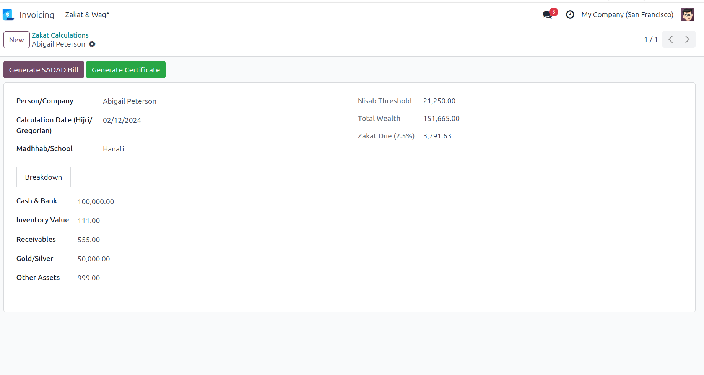
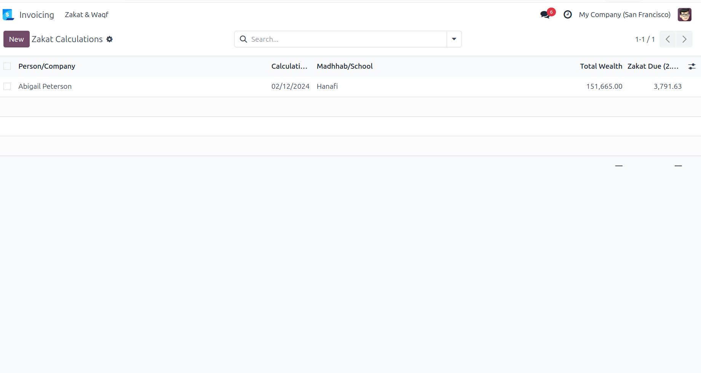
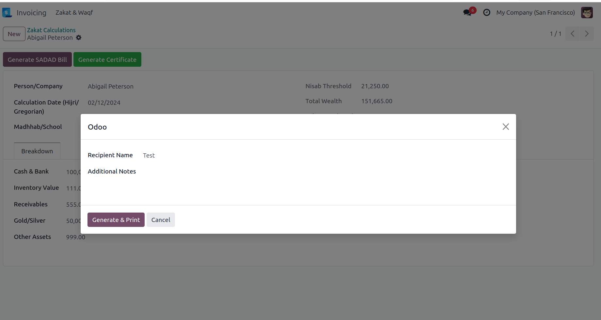
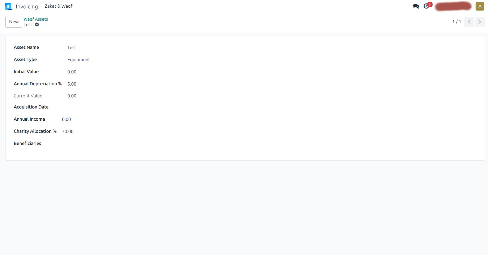

📖 What is ZakatPro?
ZakatPro is the first complete Zakat and Waqf management module for Odoo 17. It automatically calculates Zakat (2.5%) on cash, inventory, receivables, gold, and other assets, checks Nisab threshold, and generates official bilingual certificates accepted by authorities in Saudi Arabia, UAE, Qatar, Kuwait, Bahrain, and Oman.
✨ Key Features
Automatic Zakat Calculation
2.5% of net wealth with automatic Nisab check based on gold price (85g gold threshold). Supports Hanafi & Shafi'i schools.
Official Certificate
Generate beautiful PDF certificates with gold border, unique serial number, Arabic/English text, and authorized signature.
SADAD Integration
One-click generation of SADAD-compatible customer invoices for Zakat payment collection.
Waqf Asset Tracker
Track land, buildings, equipment with depreciation calculation and charity income distribution to beneficiaries.
Auto-Sync with Accounting
Automatically fetch cash, receivables, and inventory values from your Odoo accounting and stock modules.
Hijri Date Support
Display calculation and certificate dates in both Hijri (Islamic) and Gregorian calendars.
📸 How It Works (Step by Step)
Add cash & bank balances, inventory value, receivables, gold/silver, and other assets.

System calculates total wealth, compares with Nisab threshold, and shows Zakat due (2.5%).

Click "Generate SADAD Bill" to create a professional customer invoice for Zakat payment.
Click "Generate Certificate" → Enter recipient name → Get PDF certificate.



⚙️ Technical Specifications
- Odoo Version: 17.0 (Community & Enterprise)
- Dependencies: account, stock, hr
- Languages: English (default) + Arabic translation included
- Multi-Company: Yes
- Multi-Currency: Yes
- Zakat Calculation: 2.5% of net wealth (Cash + Inventory + Receivables + Gold + Other Assets)
- Nisab Threshold: 85g gold price (configurable)
- Certificate Format: PDF with gold border, QR code ready
📊 Why ZakatPro vs Manual Excel?
| Feature | ZakatPro | Manual Excel |
|---|---|---|
| Auto-calculation | ✅ Yes | ❌ Error-prone |
| Nisab check | ✅ Automatic | ❌ Manual |
| Official certificate | ✅ One click | ❌ Design yourself |
| SADAD invoice | ✅ Integrated | ❌ Not available |
| Waqf asset tracking | ✅ Included | ❌ Not available |
| Audit trail | ✅ Full Odoo logs | ❌ None |
📦 What's Included in Your Purchase?
📁 Full Module
Complete Odoo 17 module with all models, views, reports, and security rules.
🌐 Arabic Translation
Full Arabic translation (ar_001) for all labels, buttons, and reports.
📄 Certificate Template
Beautiful PDF certificate template with gold border and stamp design.
📖 Installation Guide
Step-by-step PDF guide (10 pages) with screenshots.
🆓 12 Months Updates
Free updates for 1 year including bug fixes and new features.
💬 12 Months Support
Email support within 24 hours (business days).
🎯 Who Is This For?
- 🏢 Companies in Saudi Arabia — Zakat calculation for corporate Zakat (2.5% of net wealth)
- 🇦🇪 Companies in UAE, Qatar, Kuwait, Bahrain, Oman — Islamic finance compliance
- 🏦 Islamic Banks & Financial Institutions — Customer Zakat calculation service
- 🕌 Charities & Waqf Organizations — Track endowment assets and income distribution
- 📊 Accounting Firms — Offer Zakat calculation as a service to clients
- 💻 Odoo Partners & Implementers — Add Islamic finance features to your client projects
❓ Frequently Asked Questions
📌 Is this module ZATCA compliant?
Yes, the SADAD invoice integrates with Odoo's standard accounting and works with ZATCA e-invoicing requirements when used with l10n_gcc_invoice module.
📌 Does it work with Odoo Community Edition?
Yes! ZakatPro works perfectly on both Odoo Community and Enterprise editions.
📌 Can I customize the certificate design?
Absolutely. The certificate uses standard Odoo QWeb templates. You can modify colors, logos, and layout easily.
📌 How is Zakat calculated?
Zakat = 2.5% of (Cash + Inventory + Receivables + Gold/Silver + Other Assets). Nisab threshold = 85g × current gold price (configurable).
📌 What if the total wealth is below Nisab?
Zakat Due will show 0.00 SAR, and certificate generation will be disabled until Nisab is met.
📌 Do you provide installation service?
Installation guide is included. For paid installation assistance, contact us at support@yourcompany.com.
Ready to automate Zakat calculations?
One-time payment · No subscription · Lifetime access
✅ 12 months free updates ✅ 12 months email support ✅ 30-day money-back guarantee
Buy Now on Odoo App Store →After purchase, you'll receive instant download link and installation guide.
📧 Need Help?
Before purchase: support@yourcompany.com
After purchase: Use the Odoo App Store ticket system or email us directly.
Average response time: 12-24 hours (Sunday-Thursday).